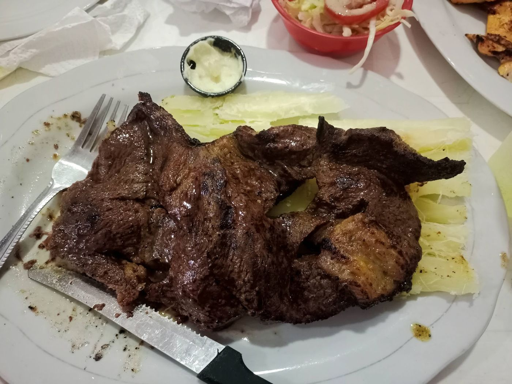
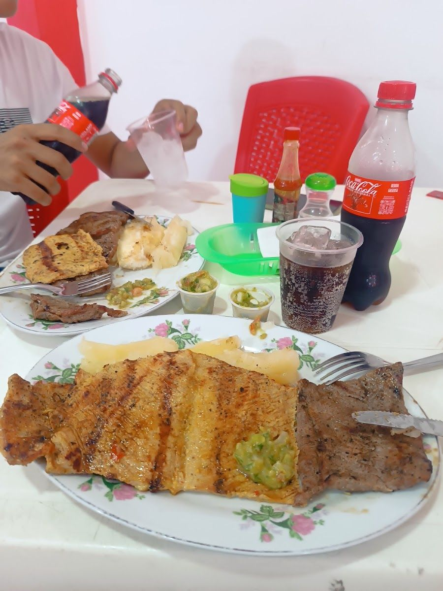
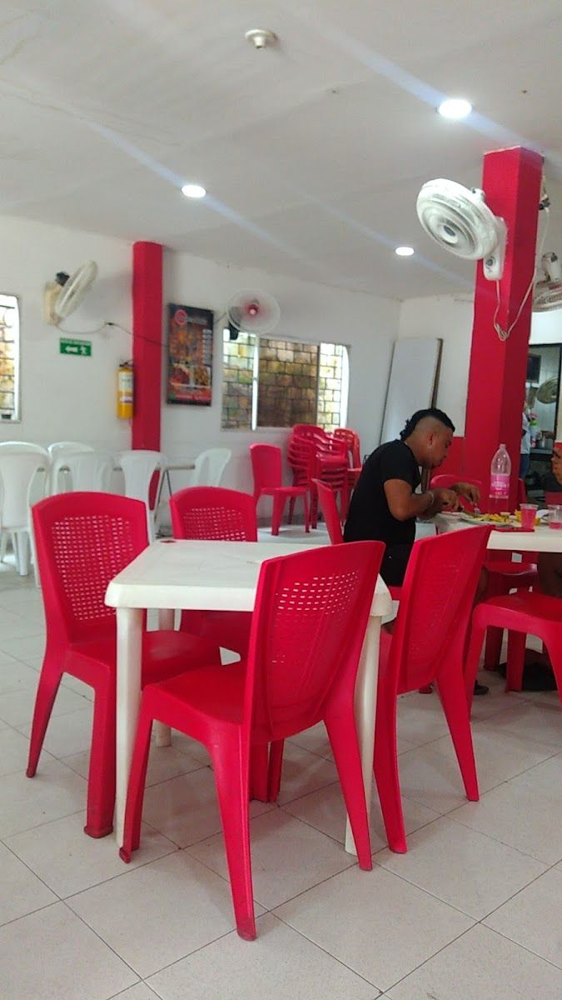
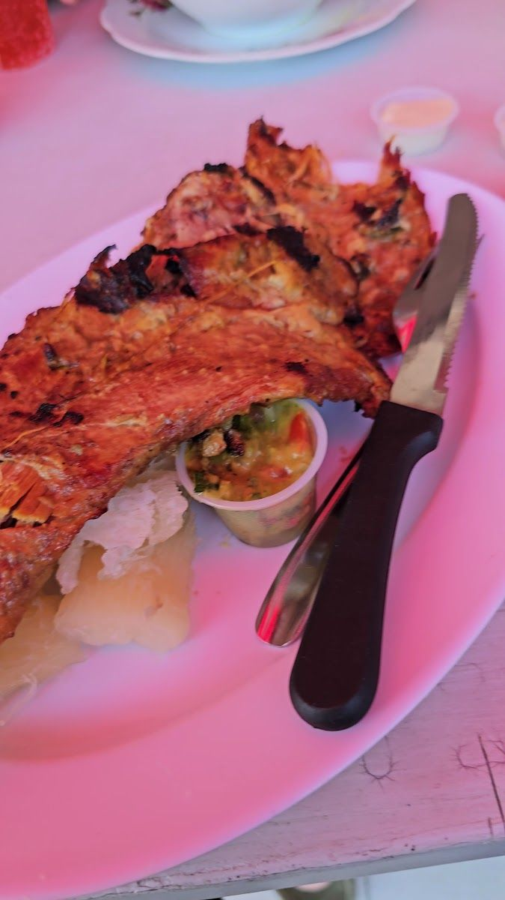
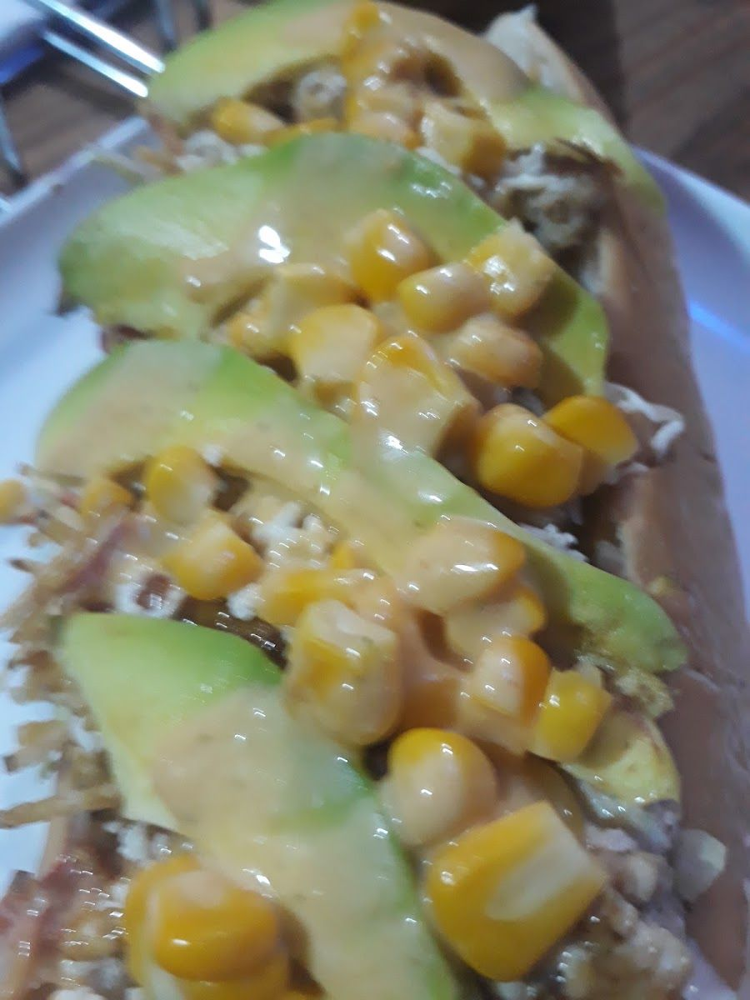
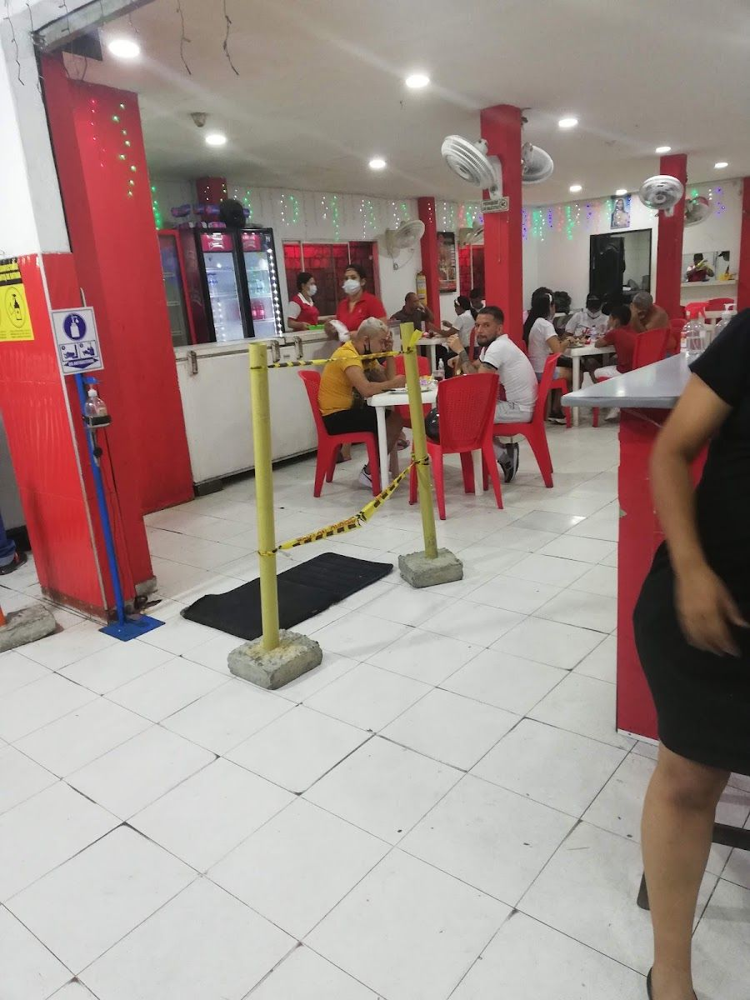
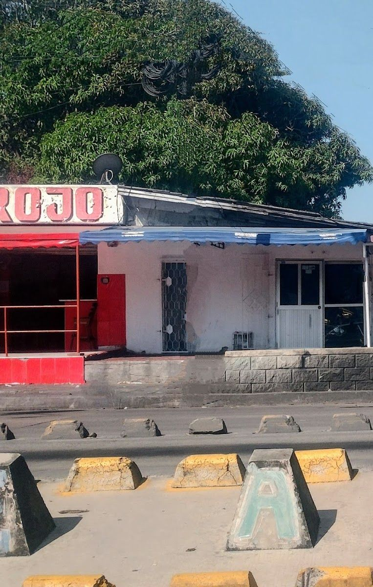

Asadero · Metropolitana, Barranquilla
Punta gorda, carnes frescas y porciones generosas en la Avenida Murillo. Abrimos todos los días de 11 a. m. a 1 a. m., en mesa, para llevar o a domicilio.

Servicio rápido y las carnes siempre son con buen sabor frescas
Punta gorda, carnes frescas y porciones generosas en la Avenida Murillo. Abrimos todos los días de 11 a. m. a 1 a. m., en mesa, para llevar o a domicilio.
Carne asada con yuca; en las reseñas destacan la punta gorda.

02Platos completos, servidos para quedar bien comido.

03Asientos en la terraza y un salón rojo y blanco para ir en grupo o con niños.

04Para llevar, a domicilio o desde el automóvil.
Fotos reales de Asadero y Estadero El Punto Rojo.



Pedí punta gorda exelente
…excelente comida y porciones generosas
Asadero · Metropolitana, Barranquilla
Asadero y estadero en la Avenida Murillo #8D-35, barrio Metropolitana, abierto todos los días hasta la 1 a. m.
Un sitio informal y relajado, ideal para ir con niños, en grupo o de paso por Barranquilla.
Escríbenos por WhatsApp y te lo preparamos.